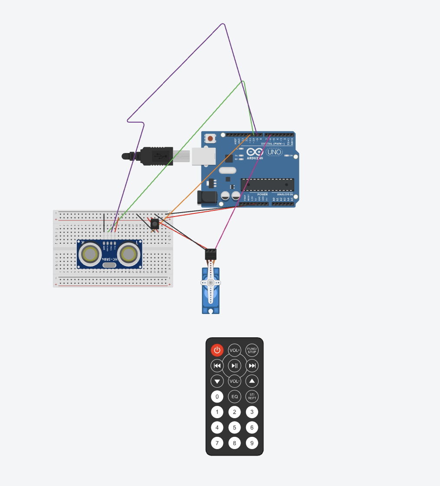

Course: TECH 117 (Computer Engineering Technology, Fall 2026)
Instructor: Ph.D. Ana Rodrigues
Team Members:
Many homeowners face difficulties when opening and closing garage doors, especially during bad weather or when carrying groceries and other items. Traditional garage doors can also be inconvenient for the elderly or people with mobility issue. Manually gargage doors may be less efficient and lack safety features that modern smart-home technologies provide. Our project addresses these issues by creating an automated garage door system that can be controlled by an infared remote, making access to the garage safer, easier, and more convenient.
Our project aligns with the United Nations' Sustainable Development Goals (SDGs), particually SDG 9 (Industry, Innovation, and Infrastructure), SDG 10 (Reduced Inequalities), and SDG 11 (Sustainable Cities and Communities). By implementing an automated garage door system, we demostrate innovation through electronic control systems (SDG 9), improve accessibility for individuals with mobility issues (SDG 10), and contribute to the development of smarter and more accessible homes (SDG 11).
Our goal is to create a fuctional garage door that is controlable via different inputs on a remote control. The directional buttons on the remote will control servos that affect the position of the door. We may add optional extra elements,such as an ultrasonic distance sensor, reactive LEDs, or active/passive buzzers for different but related purposes. Our success will be measured by the functionality of our main goal, the garage door. We must program inputs on a remote control to communicate with the motor that will be connected to the door. There will be two main inputs. Up & Down. If the garage door is responsive to the inputs, we will consider that a success. If our main goal is succesful, we will go beyond and attempt to add the extra elements mentioned previously.
Our optional extras include a ultrasonic distance sensor, reactive LEDs, & active/passive buzzers.
Challenges we may face include limited materials, programming errors, wiring issues, mechanical problems with the servo motor, remote-control communication failures, and time constraints. Designing a garage door that operates smoothly while maintaining a clean and compact appearance may also be difficult.
Solutions include testing each component before assembly and troubleshooting the code in small sections rather than all at once. If the servo motor lacks the proper movement, we can adjust the design or revise the programming. To prevent wiring mistakes, we will label connections and test circuits will help ensure the project is completed on time and functions as intended.
The remote's inputs sends signals to the servos; the Arduino tells the servos to adjust their postitoining according to the remote's imputs thresholds.

| Technology | Advantages | Disadvantages | Sustainability Evaluation |
|---|---|---|---|
| Infrared (IR) Remote Control |
|
|
Uses very little power and inexpensive reusable components. However, battery replacement can generate small amounts of waste over time. |
| Ultrasonic Sensor |
|
|
Eliminates the need for batteries in a handheld remote and promotes efficient operation by only activating when an object is detected. The additional sensor slightly increases material usage but remains reusable. |
| Item | Qty Needed | Cost Used | Package Cost | Source |
|---|---|---|---|---|
| Arduino UNO | 1 | $30.56 CAD | $30.56 CAD | Amazon Canada |
| Breadboard | 1 | $3.20 CAD | $3.20 CAD | DigiKey |
| IR Remote Kit | 1 | $6.99 CAD | $6.99 CAD | Canada Robotix |
| DC Gear Motor (4-Pack) | 1 Motor | $2.92 CAD | $11.69 CAD | Amazon Canada |
| Wheels (100-Pack) | 2 Wheels | $0.38 CAD | $19.19 CAD | Amazon Canada |
| Steel Rod (20-Pack) | 1 Rod | $0.65 CAD | $13.09 CAD | Amazon Canada |
| Jumper Wires (M-M, M-F, F-F) | 30 | $6.02 CAD | $6.02 CAD | Amazon Canada |
| Total | $50.72 CAD | $90.74 CAD | — | |
The following image shows the assembled prototype on a breadboard.

The following Arduino code controls the automated garage door system, processing infrared remote inputs to operate the servo motor while managing optional features such as LEDs, buzzers, and distance sensors for added functionality and safety.
// Collision Warning System with Distance Sensor (HC-SR04)
// Author: Ana Rodrigues
// Oct 2, 2025
// Object is farther than 50cm: Green LED lights up
// Object is closer than 50 cm, but more than 10cm away: Yellow LED lights, buzzer plays 300Hz tone
// Object is closer than 10cm: Red LED lights up, buzzer plays 500Hz tone
//LED pins
const int greenLED = 2;
const int yellowLED = 3;
const int redLED = 4;
// Ultrasonic sensor pins
const int trigPin = 9;
const int echoPin = 10;
// Passive buzzer pin
const int buzzer = 11;
void setup() {
pinMode(greenLED, OUTPUT);
pinMode(yellowLED, OUTPUT);
pinMode(redLED, OUTPUT);
pinMode(trigPin, OUTPUT);
pinMode(echoPin, INPUT);
Serial.begin(9600);
}
void loop() {
// Measure distance
digitalWrite(trigPin, LOW);
delayMicroseconds(2);
digitalWrite(trigPin, HIGH);
delayMicroseconds(10);
digitalWrite(trigPin, LOW);
long duration = pulseIn(echoPin, HIGH);
long distance = duration * 0.034 / 2;
Serial.print("Distance: ");
Serial.print(distance);
Serial.println(" cm");
//Error in measurement:
if (distance <= 0)
return;
//Too close:
if (distance <= 10) {
digitalWrite(greenLED, LOW);
digitalWrite(yellowLED, LOW);
digitalWrite(redLED, HIGH);
tone(buzzer, 500); // Play 500Hz tone
return;
}
//Midrange:
if (distance <= 30) {
digitalWrite(greenLED, LOW);
digitalWrite(yellowLED, HIGH);
digitalWrite(redLED, LOW);
tone(buzzer, 300); // Play 300Hz tone
return;
}
//Normal status:
digitalWrite(greenLED, HIGH);
digitalWrite(yellowLED, LOW);
digitalWrite(redLED, LOW);
noTone(buzzer); // stop buzzer
delay(100);
}
The project demonstrates the use of Arduino to control a garage door using an infrared remote and DC motor. The system is cost-effective and sustainable due to its reusable components. It also highlights how smart-home technology can improve convenience and accessibility in everyday life.